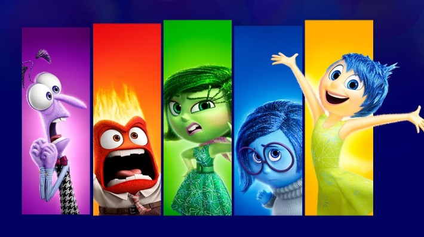

Sobre mim
“Também me tornei próximo à natureza, e agora sou capaz de apreciar a beleza com a qual este mundo é agraciado.” James Dean. Biografia James Dean

"A leitura é uma fonte inesgotável de prazer, mas, por incrível que pareça, a quase totalidade não sente esta sede." Carlos Drummond de Andrade. Biografia Carlos Drummond de Andrade

"Todo mundo erra. O que determina o caratér de uma pessoa não são os erros cometidos. É como ela usa esses erros e os transforma em aprendizados, não em desculpas." Sinopse completa de "É assim que acaba"

"A leitura é para o intelecto o que o exercício é para o corpo." Joseph Addison. Biografia de Joseph Addison

Minha história
Clique na imagem e será redirecionado para o YouTube.
Uma música para quando se entendeu como um ser.
A música do seu momento mais para baixo.
Uma música do seu momento reflexivo.
Uma música para o seu melhor momento.
Uma música para quando você entrou para o PROA.
Uma música para quando você conquistar tudo o que quiser conquistar.
Vamos falar sobre meu futuro?
3 músicas que nunca havia escutado e gostei...
Jantares
Acompanhante: Ariana Grande
Refeição: Comida japonesa
Sobremesa: Morango com chocolate
Playlist: Ariana Grande
Acompanhante: Eslen Delanogare
Refeição: Arroz, Frango,batata e Legumes
Sobremesa: Salada de frutas
Playlist: Lo-Fi
Acompanhante: Ian Somerhalder
Refeição: Churrasco
Sobremesa: Bolo de chocolate
Playlist: Pop Mix
Curiosidade ou interesse?
- Qual minha melhor lembrança?
- Viajar por todo o mundo ou ler todos os livros?
- Quem é a pessoa que te conhece melhor? Essa é a mesma pessoa que você conhece melhor?
- Um dia mágico está chegando e nesse dia você poderá ter três horas a mais nesse dia. Você pode escolher o dia. Que dia você escolheria e o que você faria com esse dia?
- Se você pudesse fazer as outras pessoas acreditarem em algo que você acredita, o que seria?
Unstable - Justin Bieber
All Around the World - Now United
Ser Humano ou Anjo - Matheus &Kauan
Under the Influence - Chris Brown
We Won't Move - Arlissa
Divertidamente
Clique e será redirecionado para o Spotify.
Felicidade: Shameless - Camilla Cabelo
Raiva: Psychosocial - Slipknot
Nojinho: Tubarão Te Amo - Dj LK da Escócia,Tchakabum, MC Ryan
Tristeza: Não existe amor em SP - Criolo
Medo: Bota na Pipokinha - MC Pipokinha,DJ Pablo RB,Noguera DJ, DJ Felypinho 013